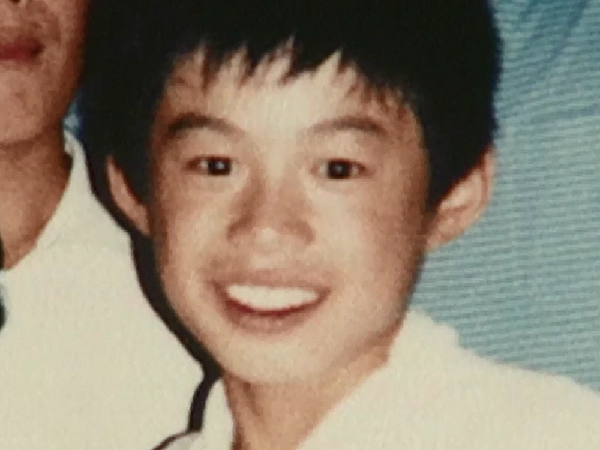

ICHIRO
慈善活動 慈善活動を積極的に行っている。1998年には出身地の愛知県に対して社会福祉のために1000万円を、兵庫県に対して震災復興のために1000万円を寄付した。 2000年には豪雨によって被害を受けた愛知県にトレーナー、パーカー計1000枚、Tシャツ500枚（計1300万円相当）を贈っている。また、1996年から2004年まで、神戸総合運動公園野球場にイチロー・シートを毎年20席（約140万円分）設置し、神戸の野球少年を招待した。2005年には病気などで苦しむ子供たちを支援するため、日米のスターバックスと協力し、店頭で自身をイメージしたプリペイドカードを販売、その売り上げを募金に寄付した。2011年2月には口蹄疫・鳥インフルエンザ復興ならびに霧島連峰・新燃岳噴火被災対応のために宮崎県に対して1000万円を贈った。さらに3月には東北地方太平洋沖地震に際して、日本赤十字社に1億円の義援金を寄付した。スターバックスのハワード・シュルツ会長によると、「イチローはマスコミに公表しないだけで、毎年、尋常じゃない額の寄付を地元シアトルにしてくれている」という。カンザスシティにあるニグロリーグ博物館への高額寄付を同館館長が米メディアに明かしている。